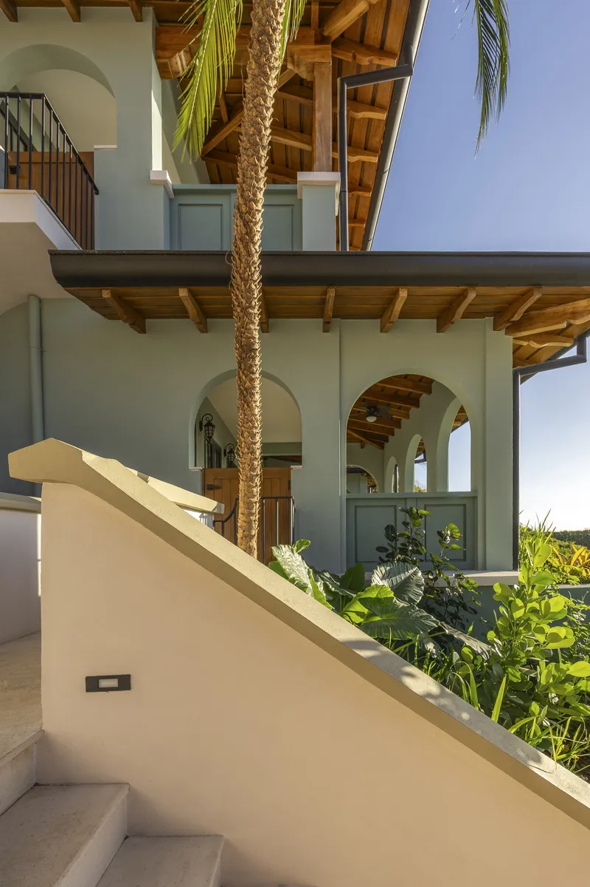
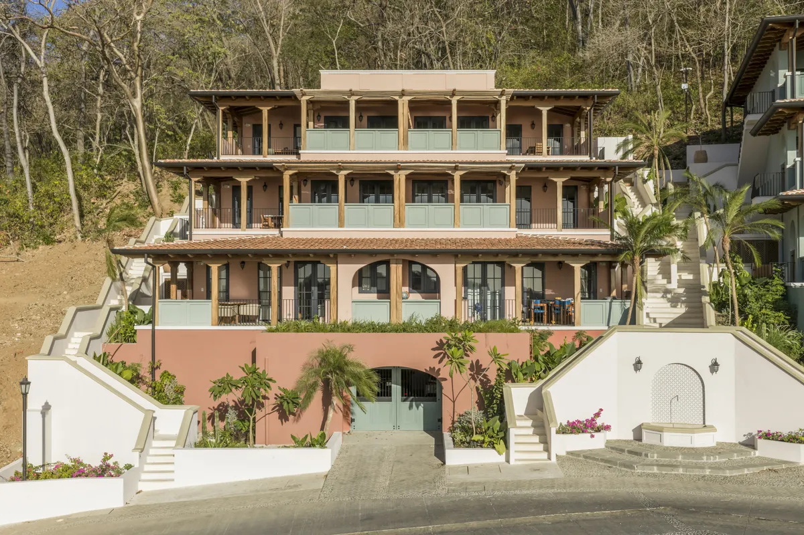
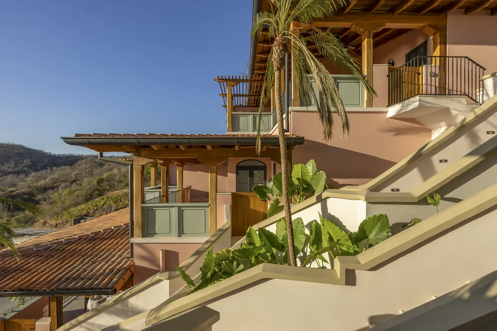
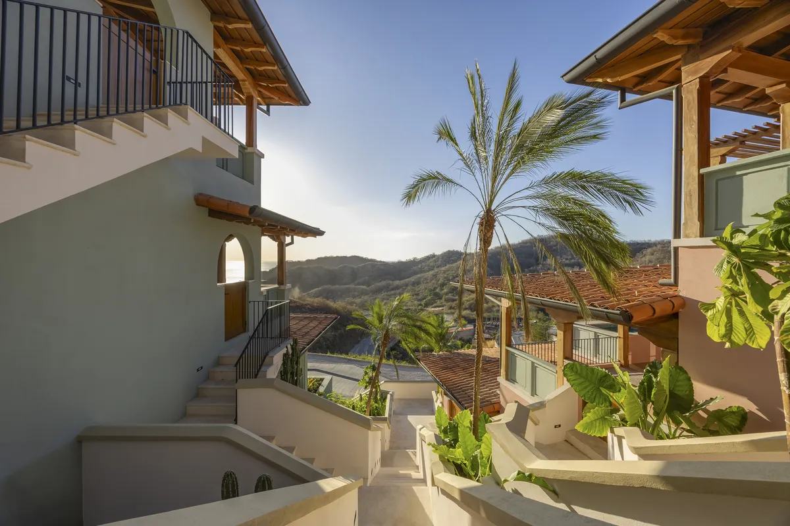
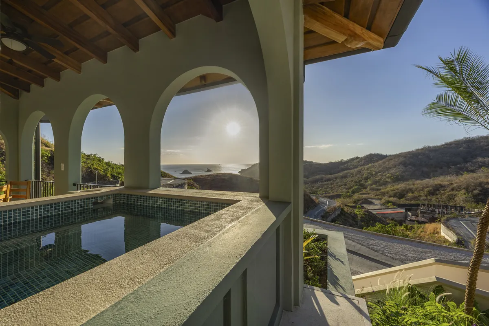
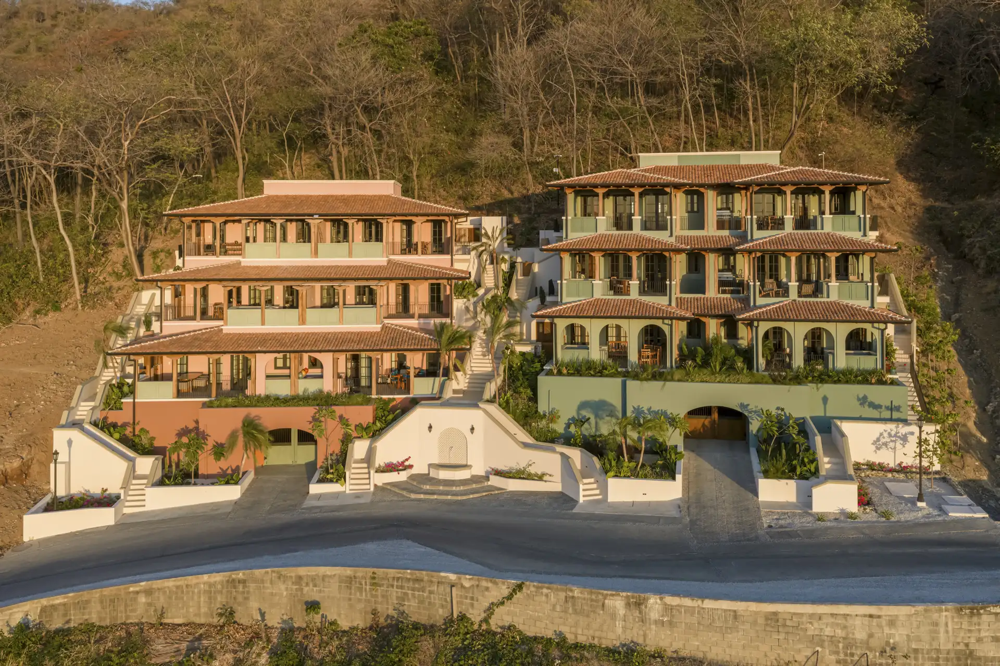
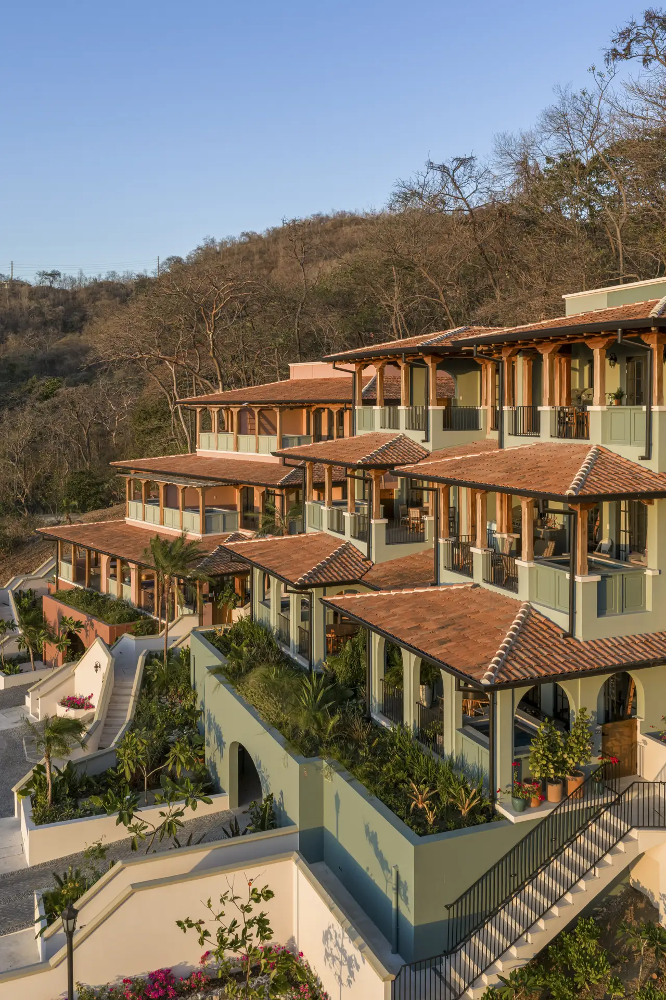
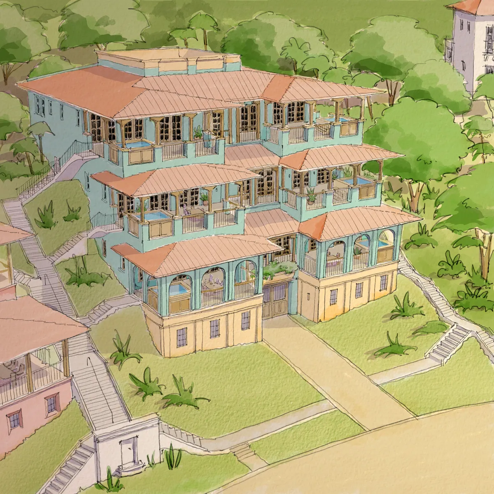
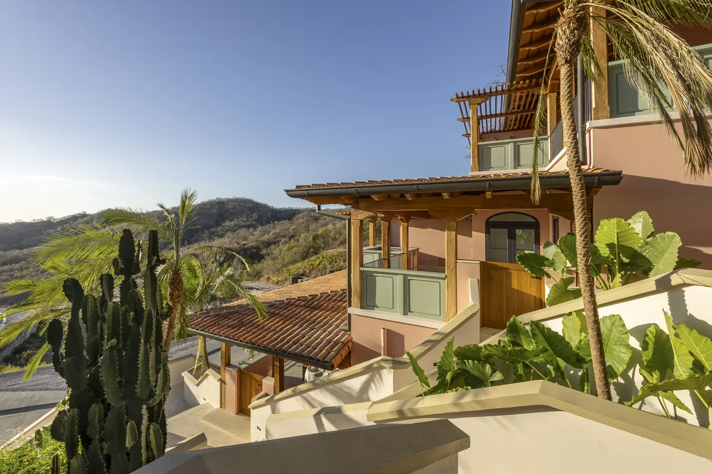

Photography by Topofilia Studio.

Architecture — Multifamily Residential

Los Altos Flats reimagines multifamily housing on tropical hillsides, demonstrating that topography is not a design limitation but an opportunity to create architecture deeply connected to the landscape. Located in the hills of Las Catalinas, the project comprises two residential buildings that carefully adapt to the site’s natural slope through a stepped section, allowing each residence open views toward the Pacific Ocean, privacy, natural light, and cross ventilation. This strategy turns a complex site condition into the main generator of the architectural experience.

The project’s innovation lies not in the pursuit of an iconic form, but in the way the architecture recedes into the landscape to enhance it. Rather than aggressively reshaping the mountain, the building accommodates it — reducing earthwork, respecting existing topography, and minimizing visual impact. Each residence has generous terraces and a private pool oriented toward the horizon, creating a continuous transition between interior and exterior suited to the tropical climate.

Los Altos Flats is part of the urban model of Las Catalinas: housing transcends the private realm to become an extension of a walkable town, connected to plazas, paths, shops, and the coast — an example of how contemporary architecture can create value through respect for context and a long-term urban vision.





Photography by Topofilia Studio.
Whether you’re envisioning a new community, a distinctive residence, or a transformative urban project, we’re here to help bring your vision to life.
Get in Touch